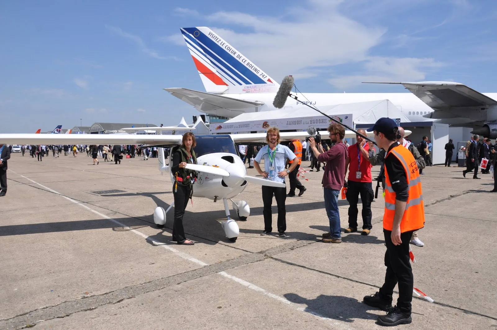

Pour ceux qui n'ont pas pu être présents, voici la video de l'un des vols de présentation au Bourget !

Comme vous vous en doutez, cela a été un grand moment pour Clem et Adrien, qui ont pu célébrer la fin du tour du monde devant les 300 000 visiteurs présents, et ont pu retrouver toutes les personnes qui les ont suivi durant cette aventure et qu'ils ont enfin pu serrer dans leurs bras !